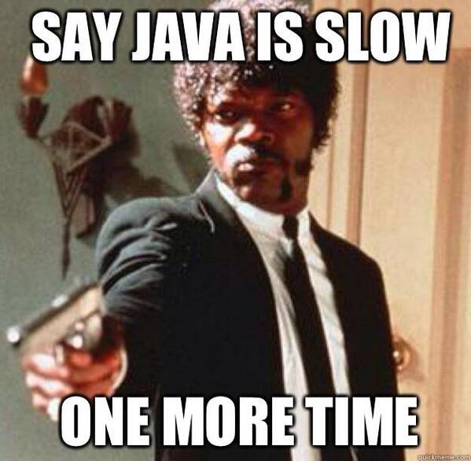

{kind=link}
void a() {
for (long i = 0; i < 1_000_000_000l; i++) {
Object o = new Object();
}
}
void b() {
for (long i = 0; i < 1_000_000_001l; i++) {
Object o = new Object();
}
}Developer Vago 2
Microbenchmarking
Axenda
(19:30) VigoJUG e VigoTech
Developer Vago
Motivación Benchmarking
JMH
Exemplos
(20:30) Charlas lostrego e debate
(21:00) Kahoot
(21:30) Refrescos
VigoJUG
Un meetup o primeiro martes de cada mes
¿Te animas cunha charla?. Licencias de JetBrains ;-)
Outras iniciativas: obradoiro virtual #VigoJUG-taller
Canal de slack #VigoJUG en http://www.vigotech.org

Developer Vago
Charla sobre unha temática xeral preparada polo VigoJUG
De utilidade para todo o mundo, independentemente da tua experiencia
Facelo ameno, non estamos para teorías cuánticas ;-)
Rematar con charlas lóstrego e/ou debates abertos
Non sexades tímidos: ¡¡participar!!

Source: http://gif.co/vc7E.gif
Java é lento

¿Qué é microbenchmarking?
¿É mellor A ou B?
Saber cal é o método/algoritmo mais eficiente
A maior parte das veces, non fai falta
premature optimization is the root of all evil (or at least most of it) in programming
¿Cal tarda en executarse máis?
Método "tradicional"
public class org.vigojug.developervago2.NoSense {
public static void main(String[] args) {
long startTime = System.currentTimeMillis();
a();
long stopTime = System.currentTimeMillis();
long elapsedTime = stopTime - startTime;
System.out.println("Time: " + elapsedTime);
}
}¿Que pode sair mal?
A JVM vai mellorando cada vez que o executa: ¡aprende!. Interpretado (JIT) → compilado
As execucións anteriores afectan
Se o código non se usa, pode non executalo
Pode saltar un GC ou outros eventos na JVM durante a execución
Java Microbenchmark Harness (JMH)
Exemplo
@Benchmark
// Don't use this in a real benchmark
@Warmup(iterations = 1)
@Measurement(iterations = 1)
public void benchmarkA() {
NoSense.a();
}
@Benchmark
// Don't use this in a real benchmark
@Warmup(iterations = 1)
@Measurement(iterations = 1)
public void benchmarkB() {
NoSense.b();
}Inicio
# JMH 1.13 (released 562 days ago, please consider updating!)
# VM version: JDK 1.8.0_141, VM 25.141-b15
# VM invoker: /home/antonmry/.sdkman/candidates/java/8u141-oracle/jre/bin/java
# VM options: <none>
# Warmup: 1 iterations, 1 s each
# Measurement: 1 iterations, 1 s each
# Timeout: 10 min per iteration
# Threads: 1 thread, will synchronize iterations
# Benchmark mode: Throughput, ops/time
# Benchmark: org.vigojug.developervago2.NoSenseBenchmark.benchmarkBResultado
# Run complete. Total time: 00:00:50
Benchmark Mode Cnt Score Error Units
NoSenseBenchmark.benchmarkA thrpt 10 2.669 ± 0.295 ops/s
NoSenseBenchmark.benchmarkB thrpt 10 2.650 ± 0.272 ops/sJMH: instalación e uso
Maven
$
$ cd test/
$ mvn clean package
$ java -jar target/benchmarks.jarGradle
$ gradle jmhIntelliJ Idea
Más info
Microbenchmarks: unha boa idea?
Moi complexos
Deben utilizar o resultado
A rendemento pode depender dos parámetros de entrada: fibonacci(1) vs. fibonacci(1000). Deben parecerse o máis posible a realidade.
Pouca granularidade: non son 100% precisos
Causas
A maioría dos problemas son debidos a:
Problemas humanos
Configuración incorrecta
Algoritmos
Opcións?
Automatización
Probas E2E: simular o input real
Profiling e Peer Review
Logs
Exemplo
log.log(Level.FINE, "I am here, and the value of X is "
+ calcX() + " and Y is " + calcY());Problemas
Chamadas a métodos (costosos?) sen motivo
Concatenación de caracteres
Mensaxe pouco descriptivo
Mellora
if (log.isLoggable(Level.FINE)) {
log.log(Level.FINE,
"Business entity created with X: {} and Y: {}",
new Object[]{calcX(), calcY()});
}Concatenación strings
Exemplo 1
public String stringAppendLoop() {
String s = "";
for (int i = 0;i < 10_000;i++) {
if (s.length() > 0) s += ", ";
s += "bar";
}
return s;
}Problemas
O String é invariable
Generar un nuevo objecto cada vez
Coste en copia de memoria y GC
Especialmente en bucles!
Exemplo 2
public String stringAppend() {
String s = "foo";
s += ", bar";
s += ", baz";
s += ", qux";
s += ", bar";
s += ", bar";
return s;
}Mellora 1
public String stringAppendBuilderLoop() {
StringBuilder sb = new StringBuilder();
for (int i = 0;i < 10_000;i++) {
if (sb.length() > 0) sb.append(", ");
sb.append("bar");
}
return sb.toString();
}Mellora 2 (pero ollo as optimizacións da JVM)
public String stringAppendBuilder() {
StringBuilder sb = new StringBuilder();
sb.append("foo");
sb.append(", bar");
sb.append(", bar");
sb.append(", baz");
sb.append(", qux");
return sb.toString();Nota
Case sempre, usa StringBuilder no lugar de StringBuffer (salvo concurrencia) e inicializa o array o valor aproximado (se podes).
Garbage Collector
Máis Heap, máis problemas
As veces, sí
Fino, fino, filipino
-verbose:gc (print the GC logs)
-Xloggc: (for more comprehensive GC logging)
-XX:+PrintGCDetails (for more detailed output)
-XX:+PrintTenuringDistribution (displays the tenuring thresholds assumed by the JVM)Lightning talks?
Debate aberto
¿Microbenchmarks?
Xa os usaba.
Non os coñecía pero vou probar.
Non me fan falta, paso.
¿Profiling?
¿Usades algún?
¿Automatizar as probas de carga?
¿Algo mais?
Kahoot
Meetup Marzo 2018
Non temos charla e non hai quen poida facer o Developer Vago
HashCode 2018: pendentes de local pero farase algo
¿Dúbidas?
Slides: https://github.com/vigojug/developer-vago-2-micro-benchmarking
Código: http://www.vigojug.org/developer-vago-2-micro-benchmarking/
Slack: canal #vigojug en http://www.vigotech.org